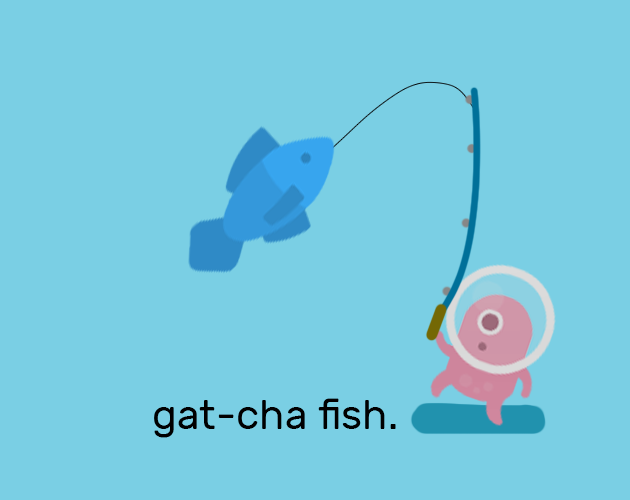

The current take on the same idea: a cosy idle fishing game, in Unity 6.3, headed for Steam. The 2022 prototype was thrown out and kept at a tag rather than carried forward.
The core is deliberately plain C# with no engine types in it — one fishing state machine, the mash and reel minigames, and an economy covering rolls, values, boosts, the ladder and aquarium capacity — so all of it runs under test without the game running. The economy's numbers live in a json file shared with a pacing simulation, which means the design document and the game cannot quietly disagree about how long anything takes.
On top of that sits the Steam layer: item drops after a won fight, selling, a shiny exchange, achievements and leaderboards, with permanent item ids derived from the item names so they survive a catalogue reshuffle. Multiplayer is in too — sessions, a mash-off mode and lobby transport over Steam. The art is all placeholder for now, which is the next real piece of work.
I did a poor job of explaining that, and it was received badly because people expected a very active game when it was the opposite. That taught me to explain these games far more clearly — looking back, I understand the reaction.
- THERE IS NO SAVE STATE FOR THIS GAME
- Game can only be played on 700px or wider